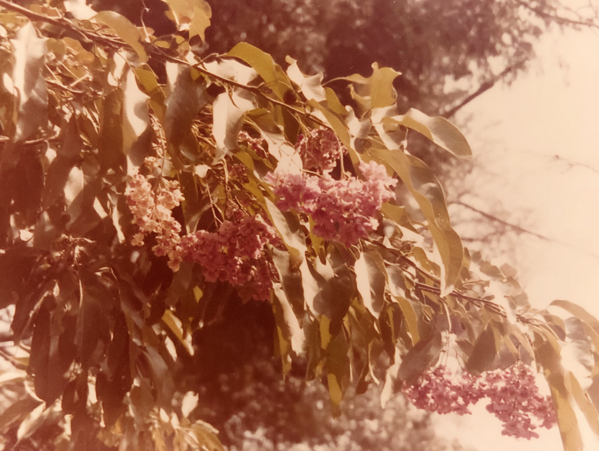
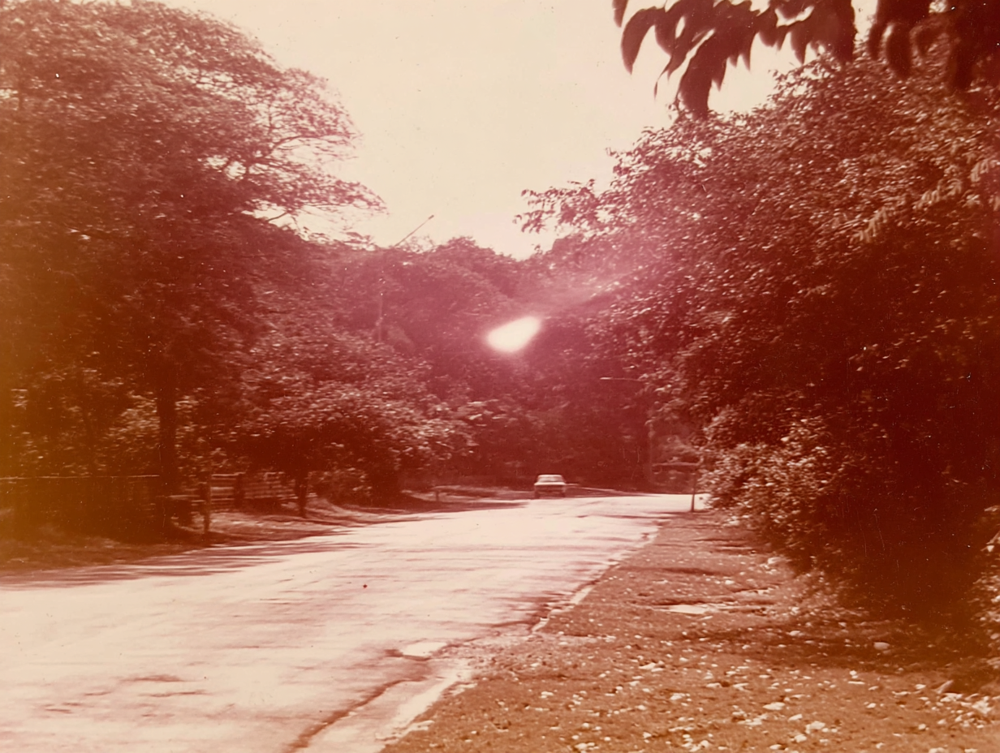
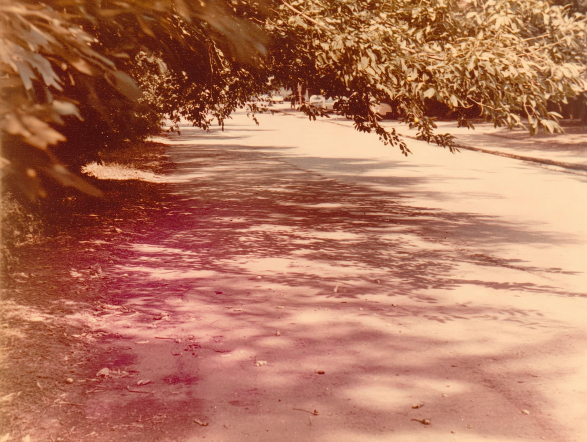
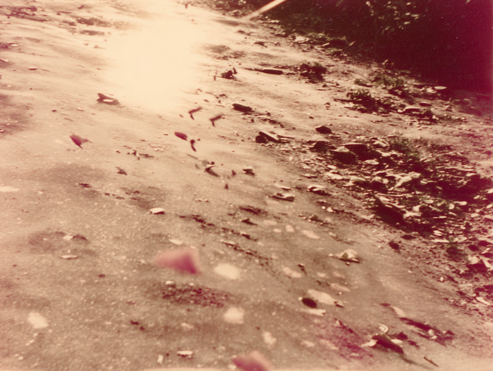
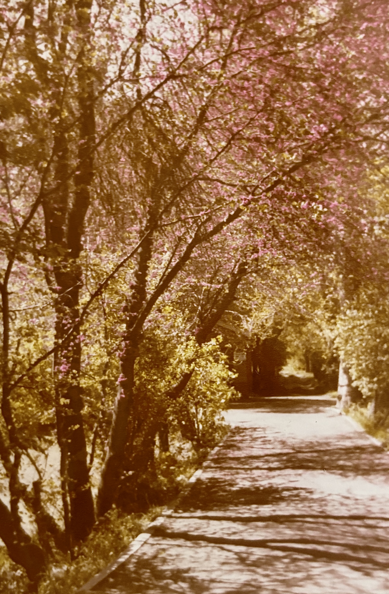

tree branch with elongated leaves and clusters of pink flowers against a bright sky.
Tree-lined paved road with single distant car, central lens flare, deep shadows, warm sepia tone, film grain, vintage photograph.
Road shaded by overhanging tree canopy, dappled sunlight on pavement, faint cars in background, warm faded color cast, analog film texture.
dappled sunlight flickering across blossom and leaves in Tehran, soft focus as if seen through half-closed eyes, subtle motion blur, 1970s analog photograph, faded print texture on film, slight color shift toward warm, skew alignment, hand held feel. dust and grain on film time suspended, nostalgic and tender, imperfect, grainy 35mm film
dappled sunlight flickering across tarmac, soft focus as if seen through half-closed eyes, subtle motion blur, 1970s analog photograph, faded print texture, slight color shift toward warm, skew alignment, hand held feel. dust and grain on film time suspended, nostalgic and tender, imperfect 35mm film
fragmented memory of walking down a tree-lined road, golden sepia tones, branches arching overhead like a tunnel, dappled sunlight flickering across pavement, soft focus as if seen through half-closed eyes, 1970s analog photograph, faded print texture, slight color shift toward warm, skew alignment, yellow, quiet suburban countryside, in Iran, sense of returning to a place once known, dust and grain on film time suspended, nostalgic and tender, imperfect 35mm film